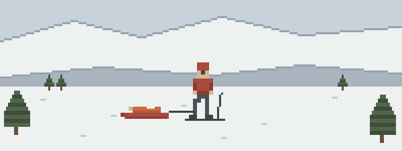

What sweep finds
- The glade with a new angle. A skier’s lower leg found a buried stump and now points somewhere novel. Splint before the sled, check circulation before and after, and keep a toe window you can actually see.
- Sweep finds the overdue snowboarder. He’s been sitting in the trees since last chair, and he’s stopped shivering without getting any warmer. Gentle handling and the wrap are the whole ride down.
- “My neck hurts” at the top of the steeps. Conscious, talking, helmet on, neck sore — and the sled is below him on a 30-degree pitch. Packaging him and moving him both have to happen, in the right order, head in the right hands.
Pre-season doctrine order
Ordered the way the hill teaches it:
- Cold Injuries — hypothermia, frostbite, and the wrap — patrol’s home terrain
- Musculoskeletal Injuries — splint before the sled, and prove CSM twice
- Spine & Helmets — packaging doctrine, including the helmet question
- Patient Assessment — the on-slope system, from scene to serial vitals
- Evacuation — sled now, sled later, or call for more — the decision chain at our level
Then pressure-test it
Interactive scenarios — one decision at a time, tempting mistakes included, debrief at the end:
- The Burrito — the wrap, insulation under first
- Don’t Sit Him Up — packaging a spine that still has to go downhill
- Wiggle, Feel, Warm — the terrain-park wrist, checked twice
The certification question, honestly. “Wilderness First Aid” isn’t a regulated credential. No government body defines what a WFA card means — it means whatever the company that printed it says it means. What counts in front of a patient is whether you can do the work. This course teaches the work, free, and issues a record of completion — not a certificate, and we won’t pretend otherwise. OEC — Outdoor Emergency Care, through the National Ski Patrol — is the patrol credential, and this substitutes for none of it. Use it to walk into your OEC course fluent, and to keep the doctrine warm between seasons. If nobody requires you to hold a card, what you need are the skills, not the laminate.
What this is
Fifteen lessons, a 40-question knowledge check, sixteen practice scenarios, a printable field reference card, and a kit checklist. Free, no account, nothing recorded about you, source on GitHub. It teaches decision-making, not hands-on skill — practice the hands-on parts on a real, padded, complaining friend.
Others who answer the call: SAR candidates & volunteers · volunteer firefighters in rural & wildland-urban interface districts · park rangers, game wardens & conservation officers